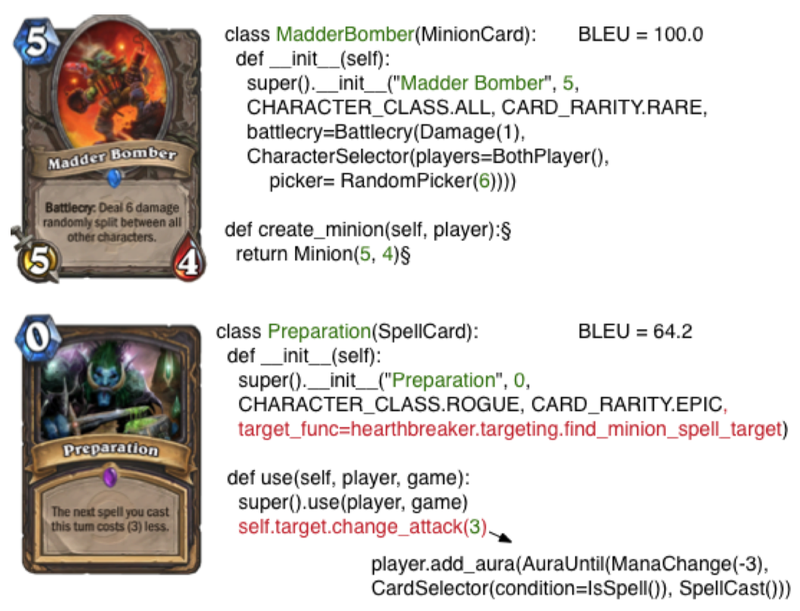
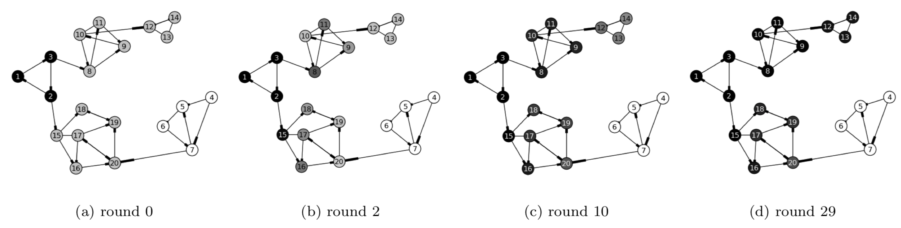
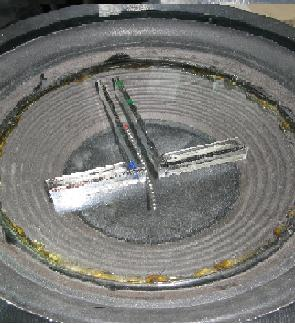
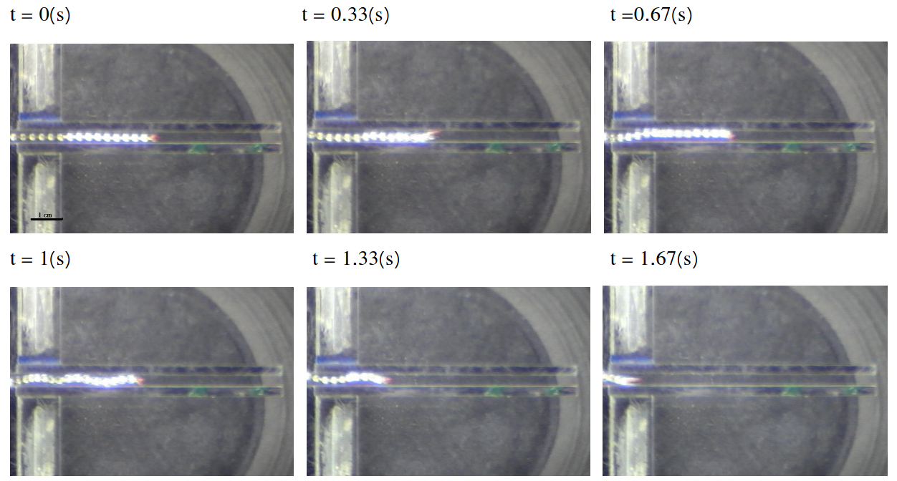

I am Fumin who is interested in Physics and Computer Science.
News
Note on e-values.
Note on Statistics.
Note on Thermodynamics.
I gave a recent talk about price prediction.
Publications
Recent notes can be found here.
Leveraging Demonstrations for Deep Reinforcement Learning on Robotics Problems with Sparse Rewards, arXiv:1707.08817
This work demonstrates robust behaviour of robots against errors and variations in the environment.
Force feedback allows the robot to recover from mistakes along its trajectory, in contrast to conventional scripting methods.
More information can be found in this RSS talk.
Grounded Language Learning in a Simulated 3D World, arXiv:1706.06551
This work demonstrates language understanding through Reinforcement Learning in a sensory rich environment.
Through task solving, the agent is able to generalize to the combinatorial number of sentence constructs, a key feature of human language.
Latent Predictor Networks for Code Generation, Association for Computational Linguistics, 2016, arXiv:1603.06744
This work shows that neural networks can learn utilities of cards from their linguistic description in the games "Magic the Gathering" and "Hearthstone".
Modeling the diffusion of preferences on social networks, SIAM International Conference on Data Mining, 2013, pdf
This work provides a social network model that captures the real world phenomenon of opinion leaders influencing opinion followers.
As a result, it answers questions such as given the initial beliefs of the leaders and the global structure of the social graph, what would be the long term opinions of each and every member in this network.

Entropic force of a confined chain, pdf
This work studies the tendency of a chain to move out from a confined region into a more spacious one.
This movement is not driven explicitly by mechanical forces, but implicitly by the second law of thermodynamics which directs the state of a physical system to go from low to high entropy.
This phenomenon was first observed in the microscopic scale of DNA strands, but apparently also manifests in the macrosopic world as described in this work.


Miscellaneous
I am a contributor to Go and the GNU Image Editor (powered by GEGL). I have a Github and some of my work in the distant past can be found here.Contact
awaw fumin at gmail dot com (<- remove the spaces)
Masterdon, Twitter.